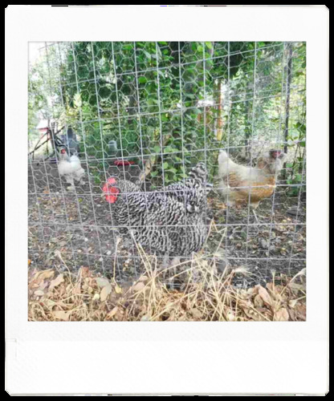

I've been having a lot of fun with my instax pal, despite its numerous flaws!

A friendly pair of eyes
I love chickens. I say good morning to them every time I walk past and they come up and cluck at me~ SO CUTE
McDonald's now has kpop toys and kpop music. Very strange.

Big fan of the tree beans
This was the second time I tried to get a shot with the center of the plant in the center of the image. This time went better, but aiming is incredibly difficult!
What is this shot of... it's a mystery.
I found a little art gallery box! What should I leave in there?! I haven't prepared anything yet! Ack!! This is my big debut right??
I love this camera so it's hard not to recommend it, but it really is for a very particular audience. I know a few people who would adore it, but many more who would put it in their desk drawer and forget it. I'm unsure if Mavica fanboys would enjoy it. Someone will have to try it and let me know. I hope everyone who will also love it will find one for a good price!
It really makes me wish I had a printer for it. Very few of my shots are worth printing, but once in a while I get a good one. Maybe I'll be convinced to buy a link printer or an Evo someday.
Taking photos is so fun ;u;